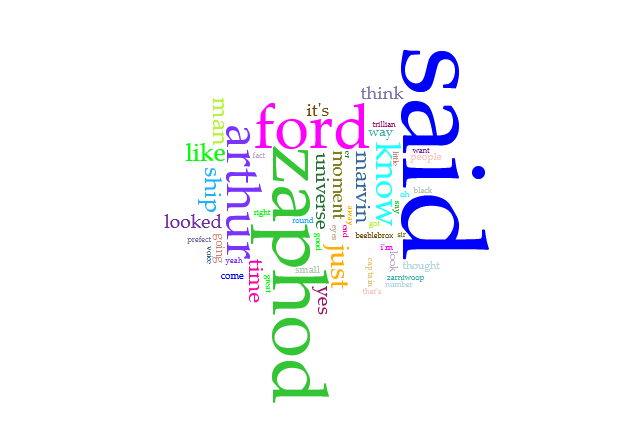
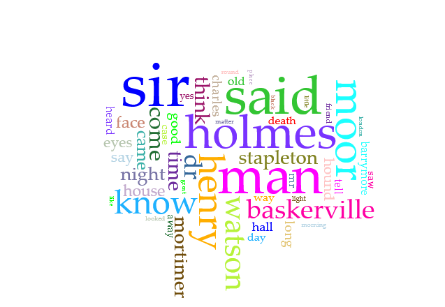
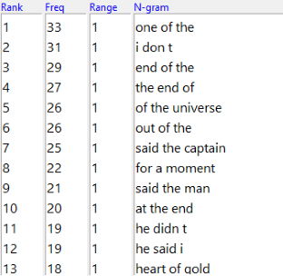
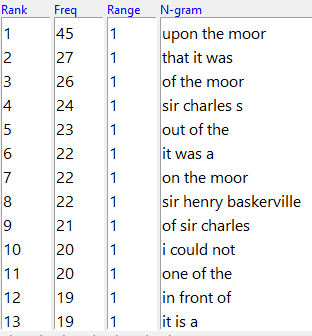
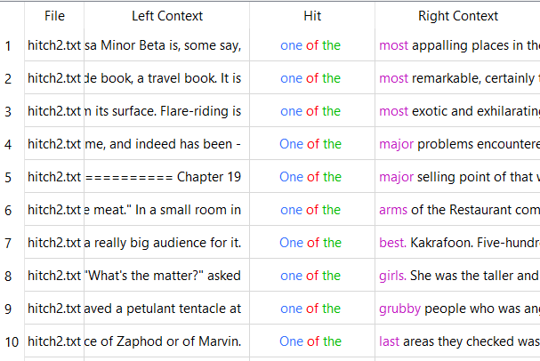
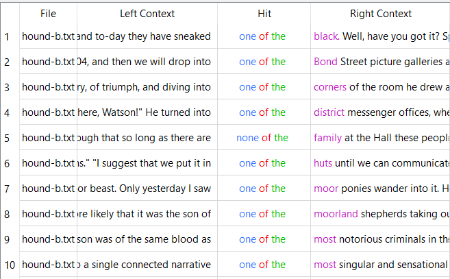
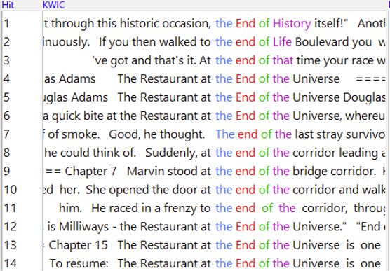
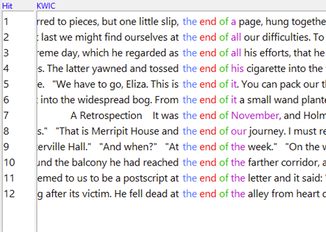

AntConc and Voyant Text Corpora Comparative Analysis: Comparing “The Restaurant at the End of the Universe” by Douglass Adams with “The Hound of the Baskervilles” by Sir Arthur Conan Doyle
Both of these works are by British novelists. While 'The Hound of the Baskervilles' was published in 1902, 'The Restaurant at the End of the Universe' was published in 1980, 78 years apart.


Both word clouds have 'said' as very commonly used words. With both books being character driven, this makes sense; there will be a lot of dialogue. Names are also very common for this reason; narration has to specify which character is speaking. It seems like names are more often replaced by descriptive pronouns in The Hound of The Baskervilles than in The Restaurant at the End of the Universe. Thr Hound of The Baskervilles is a mystery novel, which might be why direct names aren't used quite as often.


The most used 3 word n-gram in The Hound of the Baskervilles is 'upon the moor'. This seems slightly flowery compared to The Restaurant at the End of the Universe. That might be because older literature tended to be more poetic compared to more modern writing. That's beside the fact that Douglass Adams' writing is also quite prose heavy.


'One of the' is the most repeated 3 word n-gram in The Restaurant at the End of the Universe, and the 11th most repeated 3 word n-gram in The Hound of the Baskervilles.


Interestingly, one of the most common 3 word n-grams in The Restaurant at the End of the Universe is also a common 3 word n-gram in The Hound of the Baskervilles. 'The end of' is repeated often throughout both books. In The Restaurant at the End of the Universe, it's in the title of the book, and being also an important place in the book, it's repeated what looks to be about half the time in that name. In The Hound of the Baskervilles, it's not part of a name, but still repeats quite often.